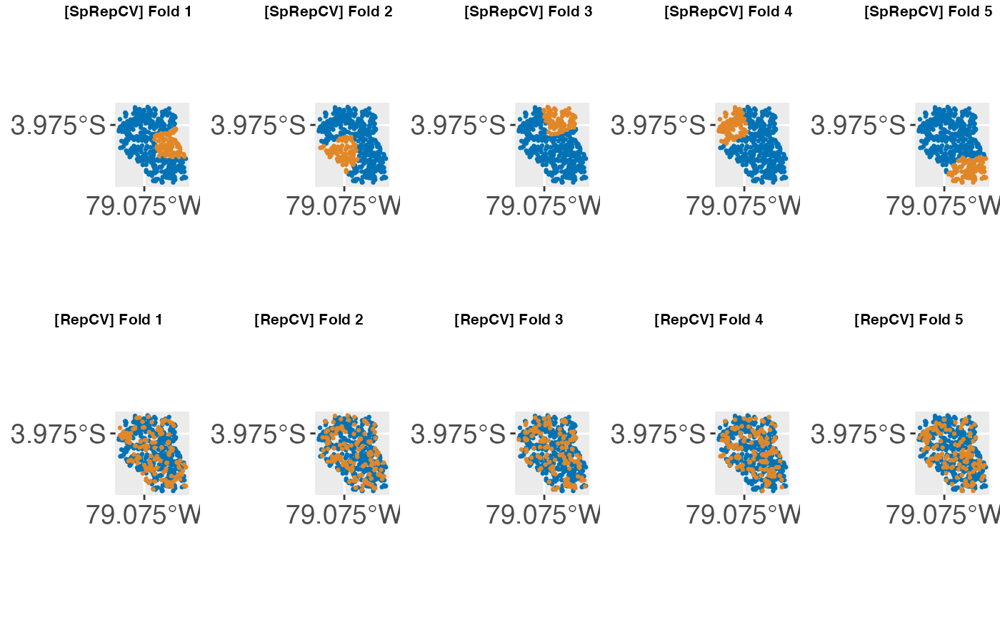

Handling of Spatial Data
Patrick Schratz
Source:vignettes/tutorial/handling_of_spatial_data.Rmd
handling_of_spatial_data.RmdAttention
If you arrive here and did not yet start with {mlr}, please consider using {mlr3} and its extension package {mlr3spatiotempcv} for spatiotemporal data handling. It is much more advanced and actively maintained while {mlr} and the solution shown below is deprecated and considered as legacy.
Introduction
Spatial data is different from non-spatial data by having a spatial reference information attached to each observation. This information is usually stored as coordinates, often named x and y. Coordinates are either stored in UTM (Universal Transverse Mercator) or latitude/longitude format.
Treating spatial data sets like non-spatial ones leads to overoptimistic results in predictive accuracy of models (Brenning 2005). This is due to the underlying spatial autocorrelation in the data. Spatial autocorrelation does occur in all spatial data sets. Magnitude varies depending on the characteristics of the data set. The closer observations are located to each other, the more similar they are.
If common validation procedures like cross-validation are applied to such data sets, they assume independence of the observation upfront to provide unbiased estimates. However, this assumption is violated in the spatial case due to spatial autocorrelation. Subsequently, non-spatial cross-validation will fail to provide accurate performance estimates.

Nested Spatial and Non-Spatial Cross-Validation
By doing a random sampling of the data set (i.e., non-spatial sampling), training and test set data are often located directly next to each other (in geographical space). Hence, the test set will contain observations which are somewhat similar (due to spatial autocorrelation) to observations in the training set. This leads to the effect that the model, which was trained on the training set, performs quite well on the test data because it already knows it to some degree.
To reduce this bias on the resulting predictive accuracy estimate, Brenning 2005 suggested using spatial partitioning in favor of random partitioning (see Figure 1). Here, spatial clusters are equal to the number of folds chosen. These spatially disjoint subsets of the data introduce a spatial distance between training and test set. This reduces the influence of spatial autocorrelation and subsequently also the overoptimistic predictive accuracy estimates. The example in Figure 1 shows a five-fold nested cross-validation setting and exhibits the difference between spatial and non-spatial partitioning. The nested approach is used when hyperparameter tuning is performed.
How to use spatial partitioning in mlr
Spatial partitioning can be used when performing cross-validation. In any resample() call you can choose SpCV or SpRepCV to use it. While SpCV will perform a spatial cross-validation with only one repetition, SpRepCV gives you the option to choose any number of repetitions. As a rule of thumb, usually 100 repetitions are used with the aim to reduce variance introduced by partitioning.
There are some prerequisites for this:
When specifying the task, you need to provide spatial coordinates through argument coordinates. The supplied data.frame needs to have the same number of rows as the data and at least two dimensions need to be supplied. This means that a 3-D partitioning might also work but we have not tested this explicitly. Coordinates need to be numeric so it is suggested to use a UTM projection. If this applies, the coordinates will be used for spatial partitioning if SpCV or SpRepCV is selected as resampling strategy.
Examples
The spatial.task data set serves as an example data set for spatial modeling tasks in mlr. The task argument coordinates is a data.frame with two coordinates that will later be used for the spatial partitioning of the data set.
In this example, the “Random Forest” algorithm (package ranger) is used to model a binomial response variable.
For performance assessment, a repeated spatial cross-validation with 5 folds and 5 repetitions is chosen.
Spatial Cross-Validation
data("spatial.task")
spatial.task
## Supervised task: ecuador
## Type: classif
## Target: slides
## Observations: 751
## Features:
## numerics factors ordered functionals
## 10 0 0 0
## Missings: FALSE
## Has weights: FALSE
## Has blocking: FALSE
## Has coordinates: TRUE
## Classes: 2
## FALSE TRUE
## 251 500
## Positive class: TRUE
learner.rf = makeLearner("classif.ranger", predict.type = "prob")
resampling = makeResampleDesc("SpRepCV", fold = 5, reps = 5)
set.seed(123)
out = resample(learner = learner.rf, task = spatial.task,
resampling = resampling, measures = list(auc))
## Resampling: repeated spatial cross-validation
## Measures: auc
## [Resample] iter 1: 0.5398810
## [Resample] iter 2: 0.7046371
## [Resample] iter 3: 0.6703070
## [Resample] iter 4: 0.7350827
## [Resample] iter 5: 0.4451993
## [Resample] iter 6: 0.7221774
## [Resample] iter 7: 0.7232207
## [Resample] iter 8: 0.6615998
## [Resample] iter 9: 0.4508605
## [Resample] iter 10: 0.5366071
## [Resample] iter 11: 0.6672078
## [Resample] iter 12: 0.7108196
## [Resample] iter 13: 0.7040323
## [Resample] iter 14: 0.4429348
## [Resample] iter 15: 0.5380952
## [Resample] iter 16: 0.7224771
## [Resample] iter 17: 0.4468864
## [Resample] iter 18: 0.7132179
## [Resample] iter 19: 0.5254868
## [Resample] iter 20: 0.6689787
## [Resample] iter 21: 0.7235356
## [Resample] iter 22: 0.7069237
## [Resample] iter 23: 0.4537241
## [Resample] iter 24: 0.5137457
## [Resample] iter 25: 0.6664699
##
## Aggregated Result: auc.test.mean=0.6157643
##
mean(out$measures.test$auc)
## [1] 0.6157643We can check for the introduced spatial autocorrelation bias here by performing the same modeling task using a non-spatial partitioning setting. To do so, we simply choose RepCV instead of SpRepCV. There is no need to remove coordinates from the task as it is only used if SpCV or SpRepCV is selected as the resampling strategy.
Non-Spatial Cross-Validation
learner.rf = makeLearner("classif.ranger", predict.type = "prob")
resampling = makeResampleDesc("RepCV", fold = 5, reps = 5)
set.seed(123)
out = resample(learner = learner.rf, task = spatial.task,
resampling = resampling, measures = list(auc))
## Resampling: repeated cross-validation
## Measures: auc
## [Resample] iter 1: 0.7525173
## [Resample] iter 2: 0.7893519
## [Resample] iter 3: 0.7368117
## [Resample] iter 4: 0.7832925
## [Resample] iter 5: 0.7351196
## [Resample] iter 6: 0.7983069
## [Resample] iter 7: 0.7962963
## [Resample] iter 8: 0.7596154
## [Resample] iter 9: 0.6641679
## [Resample] iter 10: 0.8370274
## [Resample] iter 11: 0.7772298
## [Resample] iter 12: 0.7561364
## [Resample] iter 13: 0.7850379
## [Resample] iter 14: 0.7368225
## [Resample] iter 15: 0.7632756
## [Resample] iter 16: 0.7820844
## [Resample] iter 17: 0.7316300
## [Resample] iter 18: 0.7466029
## [Resample] iter 19: 0.8049018
## [Resample] iter 20: 0.7146898
## [Resample] iter 21: 0.7245908
## [Resample] iter 22: 0.7309942
## [Resample] iter 23: 0.7865146
## [Resample] iter 24: 0.7500000
## [Resample] iter 25: 0.8117284
##
## Aggregated Result: auc.test.mean=0.7621898
##
mean(out$measures.test$auc)
## [1] 0.7621898The introduced bias (caused by spatial autocorrelation) in performance in this example is around 0.12 AUROC.
Visualization of spatial partitions
You can visualize the spatial partitioning using createSpatialResamplingPlots(). This function creates multiple ggplot2 objects that can then be visualized in a gridded way using your favorite “plot arrangement” function We recommend to use cowplot::plot_grid() and cowplot::save_plot() for this.
You can pass multiple resample result objects as inputs. This is useful to visualize the differences between a spatial and non-spatial partitioning. If you pass the resample objects in a named list, those names will be populated as plot titles. By default everything is reprojected to EPSG: 4326 (WGS 84) but this can be changed using the argument datum. If you do not like the plot appearance, you can customize all plots stored in the resulting list by just applying a function on the list, for example using purrr::map(), base::lapply() or similar functions.
library(mlr)
library(cowplot)
rdesc1 = makeResampleDesc("SpRepCV", folds = 5, reps = 4)
r1 = resample(makeLearner("classif.qda"), spatial.task, rdesc1, show.info = FALSE)
rdesc2 = makeResampleDesc("RepCV", folds = 5, reps = 4)
r2 = resample(makeLearner("classif.qda"), spatial.task, rdesc2, show.info = FALSE)
plots = createSpatialResamplingPlots(spatial.task,
list("SpRepCV" = r1, "RepCV" = r2), crs = 32717, repetitions = 1,
x.axis.breaks = c(-79.075), y.axis.breaks = c(-3.975))
plot_grid(plotlist = plots[["Plots"]], ncol = 5, nrow = 2,
labels = plots[["Labels"]], label_size = 8)
Notes
Some models are more affected by spatial autocorrelation than others. In general, it can be said that the more flexible a model is, the more it will profit from underlying spatial autocorrelation. Simpler models (e.g., GLM) will show less overoptimistic performance estimates.
The concept of spatial cross-validation was originally implemented in package sperrorest. This package comes with even more partitioning options and the ability to visualize the spatial grouping of folds. We plan to integrate more functions from sperrorest into
mlrso stay tuned!For more detailed information, see Brenning 2005 and Brenning2012.